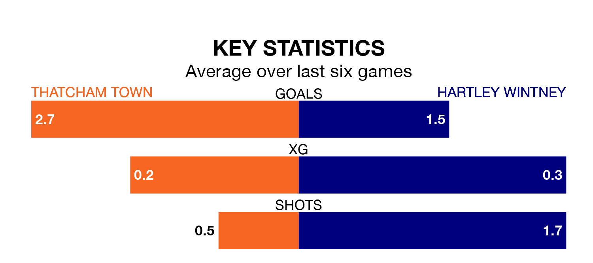

Thatcham Town host Hartley Wintney on Tuesday at Waterside Park in Isthmian League Division One South Central.
In their last league match, on Saturday, Thatcham beat Ascot United 5-1 away.
Hartley Wintney lost, 5-1 away at Westfield Surrey.
With 41 goals in 20 games so far this season, Hartley Wintney are scoring more than average in the league with 2.0 goals per game. But they are conceding more than average too, letting in 35 goals at a rate of 1.8 per game.
Thatcham are also above average scorers, with 1.8 goals per game, compared to a league average of 1.7. They have conceded 1.5 goals per game.
Town are seventh in the table after 22 games, of which they have won 10 and drawn four, earning 34 points.
The visitors are three places behind the home team in 10th, with 10 wins and two draws putting them on 32 points.
Thatcham are in reasonable form in Isthmian League Division One South Central, with three wins and two draws from their last six games.
With two wins and a draw over that period, Hartley Wintney's form is worse – they have taken seven points from 18, compared to Thatcham's 11.
Updated: 11:31, 09/01/24